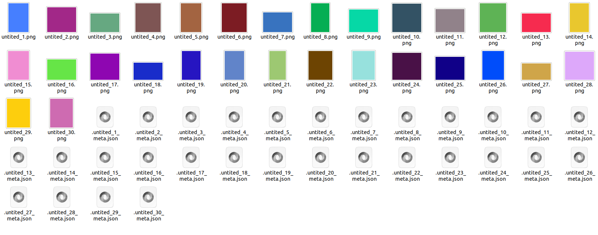
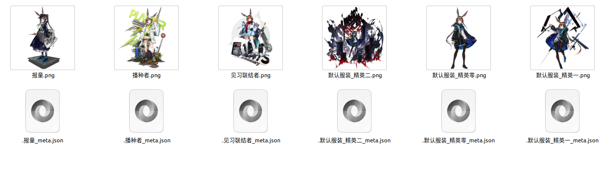
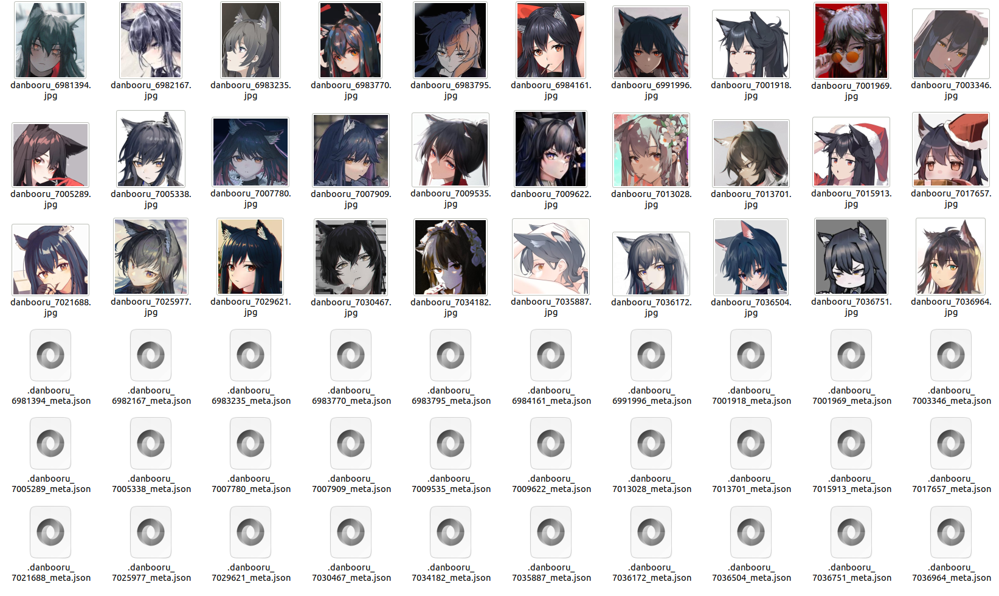
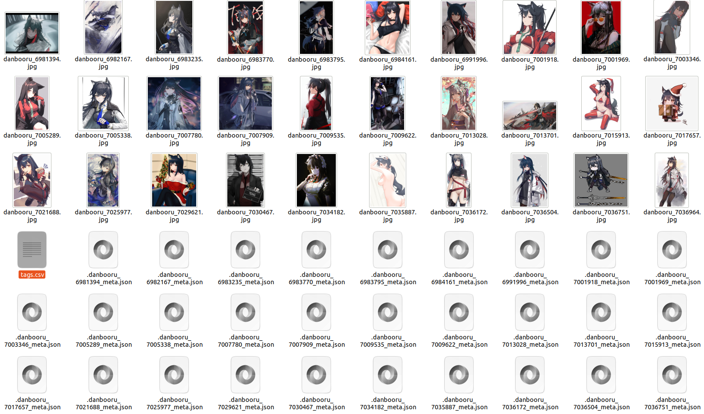

How to Customize In Waifuc?
Note
To enhance your reading experience in this chapter, it’s recommended to go through the Understanding the Waifuc Workflow section and grasp the basic concepts of waifuc’s workflow.
Framework Approach
Let’s continue with the example of the donut shop. Although our donut production pipeline is already mature, situations like the following may still arise:
- During Donut Frying:
Some customers prefer donuts made with whole wheat flour for a rougher texture but healthier option.
Some customers insist on donuts fried with a specific brand of olive oil.
- During Donut Decoration:
Some customers enjoy spicy-flavored icing.
Others want to use icing to create specific text or symbols to convey a special meaning.
- During Donut Packaging:
A small company has placed an order for a batch of donuts and wants its company logo and graphics printed on the packaging bags.
Such requirements are quite diverse and share a common characteristic:
They are not highly repeatable. They either belong to relatively niche demands or pertain to special requirements for a specific batch of donuts. In either case, it is clearly not suitable for the official production line to be established permanently.
However, they do exist. This is evident, as no valid demand should be ignored.
As a result, as the owner of a donut shop, you obviously cannot handle these demands all by yourself. Therefore, you will upgrade your industry and open up the entire process—allowing customers to make donuts in their own kitchens according to their taste preferences.
Clearly, waifuc has also taken into account the existence of diverse and specialized requirements. From the very beginning, waifuc’s design is modular. This means that users can not only customize data processing workflows but also create their own data sources, actions, and exporters to meet different dataset creation needs. The following sections will provide detailed explanations of this feature.
Custom Sources
Basic Data Sources
In waifuc, all data sources inherit from the BaseDataSource class.
The core definition of this class is as follows (for the definition of ImageItem,
see I Don’t Want to Save Images to Disk, How Can I Use Them Directly?:
- class waifuc.source.base.BaseDataSource[source]
class BaseDataSource:
def _iter(self) -> Iterator[ImageItem]:
raise NotImplementedError # pragma: no cover
def _iter_from(self) -> Iterator[ImageItem]:
yield from self._iter()
def __iter__(self) -> Iterator[ImageItem]:
yield from self._iter_from()
def __or__(self, other):
from .compose import ParallelDataSource
if isinstance(self, ParallelDataSource):
if isinstance(other, ParallelDataSource):
return ParallelDataSource(*self.sources, *other.sources)
else:
return ParallelDataSource(*self.sources, other)
else:
if isinstance(other, ParallelDataSource):
return ParallelDataSource(self, *other.sources)
else:
return ParallelDataSource(self, other)
def __add__(self, other):
from .compose import ComposedDataSource
if isinstance(self, ComposedDataSource):
if isinstance(other, ComposedDataSource):
return ComposedDataSource(*self.sources, *other.sources)
else:
return ComposedDataSource(*self.sources, other)
else:
if isinstance(other, ComposedDataSource):
return ComposedDataSource(self, *other.sources)
else:
return ComposedDataSource(self, other)
def __getitem__(self, item):
from ..action import SliceSelectAction, FirstNSelectAction
if isinstance(item, slice):
if item.start is None and item.step is None and item.stop is not None:
return self.attach(FirstNSelectAction(item.stop))
else:
return self.attach(SliceSelectAction(item.start, item.stop, item.step))
else:
raise TypeError(f'Data source\'s getitem only accept slices, but {item!r} found.')
def attach(self, *actions: BaseAction) -> 'AttachedDataSource':
return AttachedDataSource(self, *actions)
def export(self, exporter: Union[BaseExporter, str], name: Optional[str] = None):
if isinstance(exporter, str):
from ..export import SaveExporter
exporter = SaveExporter(exporter, no_meta=True)
exporter = copy.deepcopy(exporter)
exporter.reset()
with task_ctx(name):
return exporter.export_from(iter(self))
Pretty simple structure, isn’t it? When you are building your own data source,
all you need to do is inherit from the BaseDataSource class and implement _iter.
For example, in the following example, we use the Pillow library to
randomly generate solid-color images of different sizes and save them to a specified path:
1import random
2from typing import Iterator
3
4from PIL import Image
5
6from waifuc.export import SaveExporter
7from waifuc.model import ImageItem
8from waifuc.source import BaseDataSource
9
10
11class RandomColorSource(BaseDataSource):
12 def __init__(self, min_width: int = 256, max_width: int = 512,
13 min_height: int = 256, max_height: int = 512):
14 self.min_width, self.max_width = min_width, max_width
15 self.min_height, self.max_height = min_height, max_height
16
17 def _iter(self) -> Iterator[ImageItem]:
18 # endlessly create random images
19 while True:
20 r, g, b = random.randint(0, 255), random.randint(0, 255), random.randint(0, 255)
21 width = random.randint(self.min_width, self.max_width)
22 height = random.randint(self.min_height, self.max_height)
23
24 image = Image.new('RGB', (width, height), (r, g, b))
25 yield ImageItem(
26 image=image,
27 meta={
28 'color': {'r': r, 'g': g, 'b': b},
29 'size': {'width': width, 'height': height},
30 }
31 )
32
33
34if __name__ == '__main__':
35 s = RandomColorSource()
36 # only 30 images are needed
37 s[:30].export(SaveExporter('test_random_color'))
The resulting images look like this:
It’s worth noting that we not only saved the images but also saved associated metadata with the images. For example, when we open one of the JSON files, the information inside will look something like this:
1{
2 "color": {
3 "r": 70,
4 "g": 127,
5 "b": 255
6 },
7 "size": {
8 "width": 279,
9 "height": 385
10 }
11}
This is the metadata we specified in the code.
Web Data Sources
In practical usage of waifuc, we often need to fetch data from the internet, which is quite common.
To address this need, waifuc provides a base class for web data sources called WebDataSource.
Its basic structure is defined as follows:
- class waifuc.source.web.WebDataSource(group_name: str, session: Client | None = None, download_silent: bool = True)[source]
class WebDataSource(NamedDataSource):
__download_rate_limit__: int = 1
__download_rate_interval__: float = 1
def __init__(self, group_name: str, session: httpx.Client = None, download_silent: bool = True):
self.download_silent = download_silent
self.session = session or get_requests_session()
self.group_name = group_name
@classmethod
def _rate_limiter(cls) -> Limiter:
if not hasattr(cls, '_rate_limit'):
if not os.environ.get('SHOW_RATE_LIMIT_LOG'):
logger = logging.getLogger("pyrate_limiter")
logger.disabled = True
rate = Rate(cls.__download_rate_limit__, int(math.ceil(Duration.SECOND * cls.__download_rate_interval__)))
limiter = Limiter(rate, max_delay=1 << 32)
setattr(cls, '_rate_limit', limiter)
return getattr(cls, '_rate_limit')
def _iter_data(self) -> Iterator[Tuple[Union[str, int], Union[str, Image.Image], dict]]:
raise NotImplementedError # pragma: no cover
def _iter(self) -> Iterator[ImageItem]:
for id_, url, meta in self._iter_data():
if isinstance(url, Image.Image):
meta = dict(meta)
if 'url' not in meta:
meta = {**meta, 'url': None}
yield ImageItem(url, meta)
else:
with TemporaryDirectory(ignore_cleanup_errors=True) as td:
_, ext_name = os.path.splitext(urlsplit(url).filename)
filename = f'{self.group_name}_{id_}{ext_name}'
td_file = os.path.join(td, filename)
try:
self._rate_limiter().try_acquire(filename)
download_file(
url, td_file, desc=filename,
session=self.session, silent=self.download_silent
)
image = Image.open(td_file)
image.load()
except httpx.HTTPError as err:
warnings.warn(f'Skipped due to download error: {err!r}')
continue
except UnidentifiedImageError:
warnings.warn(f'{self.group_name.capitalize()} resource {id_} unidentified as image, skipped.')
continue
except (IOError, DecompressionBombError) as err:
warnings.warn(f'Skipped due to IO error: {err!r}')
continue
meta = {**meta, 'url': url}
yield ImageItem(image, meta)
It indirectly inherits from the BaseDataSource class and implements the _iter method.
In the _iter_data method, you need to continuously iterate and provide resource IDs, image URLs,
and metadata. The downloading and output as ImageItem are automatically handled in the _iter method.
With this structure in place, you can easily implement web grabing for custom websites and use it as a data source in waifuc. For example, you can grab images from the Huggingface repository (in this case, we are using the deepghs/game_character_skins repository containing character skin data for various popular mobile games):
1import os.path
2from typing import Iterator, Tuple, Union
3
4from huggingface_hub import HfApi, HfFileSystem, hf_hub_url
5
6from waifuc.source import WebDataSource
7
8
9class HuggingfaceSource(WebDataSource):
10 def __init__(self, repo_id: str, dir_in_repo: str):
11 WebDataSource.__init__(self, group_name='huggingface')
12 self.repo_id = repo_id
13 self.dir_in_repo = dir_in_repo
14 self.hf_fs = HfFileSystem()
15 self.hf_client = HfApi()
16
17 def _iter_data(self) -> Iterator[Tuple[Union[str, int], str, dict]]:
18 files = self.hf_fs.glob(f'datasets/{self.repo_id}/{self.dir_in_repo}/**/*.png')
19 for file in files:
20 file_in_repo = os.path.relpath(file, f'datasets/{self.repo_id}')
21 rel_file = os.path.relpath(file_in_repo, start=self.dir_in_repo)
22 id_ = file_in_repo
23 url = hf_hub_url(repo_id=self.repo_id, repo_type='dataset', filename=file_in_repo)
24 yield id_, url, {
25 'repo_id': self.repo_id,
26 'dir_in_repo': self.dir_in_repo,
27 'rel_file': rel_file,
28 'filename': rel_file,
29 }
After defining the above code, you can easily obtain images of my lovely waifu, Amiya’s skin:
1from waifuc.export import SaveExporter
2
3s = HuggingfaceSource('deepghs/game_character_skins', 'arknights/R001')
4s.export(SaveExporter('test_hf_amiya'))
The result looks like this:
Similarly, you can integrate your existing web grabing scripts for a specific website into waifuc, making them usable as a data source for creating high-quality datasets.
About Metadata
If you look closely, you may have noticed something - in the first example, the files are named untitled_xxx.png,
which appears to be an automatically generated default filename. However, in the second example,
the filenames are different. To explain this, we need to provide some necessary explanations about the concept
of “metadata.”
In the process of automating the handling of actual datasets, images often do not contain all the necessary information.
Therefore, we have designed the concept of ImageItem, which binds images together with their associated metadata.
This approach facilitates richer image operations in subsequent processing steps and allows us to avoid unnecessary
redundant calculations using metadata.
Some fields in the metadata have special meanings, for example:
The
filenamefield, which is what caused the difference between the two examples you mentioned. By writing the filename into this field, you can determine the filename to be used when saving the image. Moreover, this field also supports filenames with relative paths, which will create subdirectories and save images accordingly. This feature allows you to generate datasets with complex nested directory structures automatically.The
tagsfield, which stores the tags applied to the image by a tagger. It is a mapping structure where keys and values represent tag text and tag confidence, respectively. When using TextualInversionExporter, the tag information stored in this field will be saved in `txt` format, generating the format required for LoRA training.
By making good use of metadata, you can efficiently achieve complex data processing tasks in waifuc in a straightforward manner.
Custom Actions
Apart from data sources, you can also create your own custom actions.
Base Action Class
In waifuc, all action classes inherit from the BaseAction class, which is defined as follows:
- class waifuc.action.base.BaseAction[source]
class BaseAction:
def iter(self, item: ImageItem) -> Iterator[ImageItem]:
raise NotImplementedError # pragma: no cover
def iter_from(self, iter_: Iterable[ImageItem]) -> Iterator[ImageItem]:
for item in iter_:
try:
yield from self.iter(item)
except ActionStop:
break
def reset(self):
raise NotImplementedError # pragma: no cover
The iter method is the core feature of an action. It receives an individual data item and yields one or more
data items in an iterative manner (although yielding nothing is also allowed). By inheriting from
the BaseAction class and implementing the iter method, you can build your custom actions.
For example, if you want to randomly select some images from a data source and, for the selected images,
randomly select some of them to apply a mirror rotation, you can also add metadata that reflects random values
on the names of the final saved images. You can achieve this by creating a MyRandomAction like this:
1import copy
2import random
3from typing import Iterator
4
5from PIL import ImageOps
6
7from waifuc.action import BaseAction
8from waifuc.model import ImageItem
9
10
11class MyRandomAction(BaseAction):
12 def iter(self, item: ImageItem) -> Iterator[ImageItem]:
13 r = random.random()
14 if r < 0.3:
15 # just drop this image, no item yielded
16 pass
17 else:
18 # pass the item out
19 item.meta['random'] = r # set meta info
20 item.meta['filename'] = f'random_{r:.4f}.png' # set filename
21 yield item
22
23 if r > 0.7: # pass another mirrored version out
24 # copy the item to avoid using the same object
25 item = copy.deepcopy(item)
26 item.meta['random'] = r # set meta info
27 item.meta['filename'] = f'random_{r:.4f}_inv.png' # set filename
28 item.image = ImageOps.mirror(item.image)
29 # yield both original item and mirrored item
30 yield item
31 else:
32 # yield the original item only
33 pass
34
35 def reset(self):
36 pass
Once defined, you can use it like this:
1from waifuc.export import SaveExporter
2from waifuc.source import DanbooruSource
3
4s = DanbooruSource(['surtr_(arknights)', 'solo'])
5s.attach(
6 MyRandomAction(),
7)[:30].export(SaveExporter('test_surtr_inv'))
Running this code will produce images like the one below:
Note
Since this action involves randomness, the results may not be exactly the same each time it’s run; this image is for reference
Note
You might wonder what the reset method is for. Well, as the name suggests, some actions may have states.
For example, the FirstNSelectAction code shown below:
- class waifuc.action.count.FirstNSelectAction(n: int)[source]
class FirstNSelectAction(ProgressBarAction):
def __init__(self, n: int):
ProgressBarAction.__init__(self, n)
self._n = n
self._passed = 0
def _args(self) -> Optional[List[Any]]:
return [self._n]
def iter(self, item: ImageItem) -> Iterator[ImageItem]:
if self._passed < self._n:
yield item
self._passed += 1
else:
raise ActionStop
def reset(self):
self._passed = 0
The purpose of this action is to keep only the first n data items received. When n data items have passed
through this action, it stops accepting new data items. To achieve this functionality, we need to initialize some
stateful fields in the constructor. Therefore, in some cases (such as deep copies of action objects), we need to
reset the object to its initial state. So, for actions that include states, it’s essential to implement
the reset method for resetting the action object.
Filter Action Class
In waifuc, filtering is a common paradigm during the workflow setup. Filtering is characterized by:
Taking one data item as input each time.
Producing zero or one data item as output each time, and the output data item remains unchanged.
Stateless, meaning the result is consistent whenever the same data item is input.
To facilitate such operations, we provide the FilterAction base class. When you inherit from this class,
you can quickly implement filtering actions. Here’s its code definition:
- class waifuc.action.base.FilterAction[source]
class FilterAction(BaseAction):
def check(self, item: ImageItem) -> bool:
raise NotImplementedError # pragma: no cover
def iter(self, item: ImageItem) -> Iterator[ImageItem]:
if self.check(item):
yield item
def reset(self):
pass
def __call__(self, item: ImageItem) -> bool:
return self.check(item)
When inheriting this class, you only need to implement the check method. In this method,
you evaluate the input data item and return a Boolean value indicating whether to keep the data item.
For example, if you want to obtain images of the sexy babe waifu Texas and only keep comic-style images,
you can create a ComicOnlyAction like this:
1from imgutils.validate import anime_classify
2
3from waifuc.action import FilterAction
4from waifuc.model import ImageItem
5
6
7class ComicOnlyAction(FilterAction):
8 def check(self, item: ImageItem) -> bool:
9 type_, _ = anime_classify(item.image)
10 return type_ == 'comic'
Then you can use it like this:
1from waifuc.export import SaveExporter
2from waifuc.source import DanbooruSource
3
4s = DanbooruSource(['texas_(arknights)'])
5s.attach(
6 ComicOnlyAction(),
7)[:10].export(SaveExporter('test_texas'))
Process Action Class
In addition to filtering actions, there is another common type of action called processing actions. These actions have the following basic properties:
Taking one data item as input each time.
Producing strictly one data item as output each time.
Stateless, meaning the result is consistent whenever the same data item is input.
Processing actions can be used to process input data items and directly output them. For this purpose,
we provide the ProcessAction base class. Here’s its code definition:
- class waifuc.action.base.ProcessAction[source]
class ProcessAction(BaseAction):
def process(self, item: ImageItem) -> ImageItem:
raise NotImplementedError # pragma: no cover
def iter(self, item: ImageItem) -> Iterator[ImageItem]:
yield self.process(item)
def reset(self):
pass
def __call__(self, item: ImageItem) -> ImageItem:
return self.process(item)
When your processing action class inherits from ProcessAction,
you only need to implement the process method. In this method, you perform the processing of the input
data item and return the processed item as the method’s result.
For example, if you want to obtain images of the sexy babe waifu Texas and only keep the head area to
create a dataset for an AI model that recognizes heads, you can create a CutHeadAction like this:
1from imgutils.detect import detect_heads
2
3from waifuc.action import ProcessAction
4from waifuc.model import ImageItem
5
6
7class CutHeadAction(ProcessAction):
8 def process(self, item: ImageItem) -> ImageItem:
9 area, type_, score = detect_heads(item.image)[0]
10 return ImageItem(
11 image=item.image.crop(area),
12 meta=item.meta,
13 )
Then you can use it like this:
1from waifuc.export import SaveExporter
2from waifuc.source import DanbooruSource
3
4s = DanbooruSource(['texas_(arknights)', 'solo'])
5s.attach(
6 CutHeadAction(),
7)[:30].export(SaveExporter('test_texas_head'))
The resulting images might initially seem not to be so good,
but they can be improved by using the FilterSimilarAction in combination, like this:
1from waifuc.action import FilterSimilarAction
2from waifuc.export import SaveExporter
3from waifuc.source import DanbooruSource
4
5s = DanbooruSource(['texas_(arknights)', 'solo'])
6s.attach(
7 FilterSimilarAction(),
8 CutHeadAction(),
9)[:30].export(SaveExporter('test_texas_head'))
Congratulations, you now have a dataset of Texas with her head, and she is so fluffy you might want to give her a kiss!
Custom Exporters
Clearly, data exporters can also be customized. Let’s take a look at the code definition of BaseExporter:
- class waifuc.export.base.BaseExporter(ignore_error_when_export: bool = False)[source]
class BaseExporter(NamedObject):
def __init__(self, ignore_error_when_export: bool = False):
self.ignore_error_when_export = ignore_error_when_export
def pre_export(self):
raise NotImplementedError # pragma: no cover
def export_item(self, item: ImageItem):
raise NotImplementedError # pragma: no cover
def post_export(self):
raise NotImplementedError # pragma: no cover
def export_from(self, items: Iterator[ImageItem]):
self.pre_export()
names = get_task_names()
if names:
desc = f'{self} - {".".join(names)}'
else:
desc = f'{self}'
for item in tqdm(items, desc=desc):
try:
self.export_item(item)
except Exception as err:
if self.ignore_error_when_export:
logging.exception(err)
else:
raise
self.post_export()
def reset(self):
raise NotImplementedError # pragma: no cover
By reading the code, it’s evident that there are four methods to implement:
pre_export, which is executed before the actual export process and is typically used for initialization.export_item, which is executed when a data item to be exported is obtained and is generally used for data writing operations.post_export, which is executed after all data items have been exported and is generally used for resource cleanup and post-processing operations.reset, similar to action classes, initializes the state of the data exporter object.
For example, if you don’t want to save LoRA datasets in the format of image + txt but prefer image + csv (a tabular data format for storing image filenames and their tags), you can do the following:
1import csv
2import os.path
3
4from imgutils.tagging import tags_to_text
5
6from waifuc.export import BaseExporter
7from waifuc.model import ImageItem
8
9
10class CsvExporter(BaseExporter):
11 def __init__(self, dst_dir: str):
12 BaseExporter.__init__(self, ignore_error_when_export=False)
13 self.dst_dir = dst_dir
14 self._tag_file = None
15 self._tag_writer = None
16
17 def pre_export(self):
18 self._tag_file = open(os.path.join(self.dst_dir, 'tags.csv'), 'w')
19 self._tag_writer = csv.writer(self._tag_file)
20 self._tag_writer.writerow(['filename', 'tags'])
21
22 def export_item(self, item: ImageItem):
23 item.save(os.path.join(self.dst_dir, item.meta['filename']))
24 self._tag_writer.writerow([item.meta['filename'], tags_to_text(item.meta['tags'])])
25
26 def post_export(self):
27 if self._tag_file is not None:
28 self._tag_file.close()
29 self.reset()
30
31 def reset(self):
32 self._tag_file = None
33 self._tag_writer = None
Then you can use it like this:
1from waifuc.action import FilterSimilarAction, TaggingAction
2from waifuc.source import DanbooruSource
3
4s = DanbooruSource(['texas_(arknights)', 'solo'])
5s.attach(
6 FilterSimilarAction(),
7 TaggingAction(),
8)[:30].export(CsvExporter('test_texas_csv'))
The resulting files will be as shown below:
The contents of the tags.csv file will be as follows:
With this, we have covered the customization of all three core components of waifuc. If you want to further understand the internal mechanisms, you can consider reading the source code. We look forward to waifuc users unleashing their imagination to develop their own data sources, actions, and data exporters. We welcome anyone to contribute their development results as pull requests or release them as independent PyPI packages to help more people. This is exactly what the DeepGHS team hoped to see when designing waifuc as a framework.